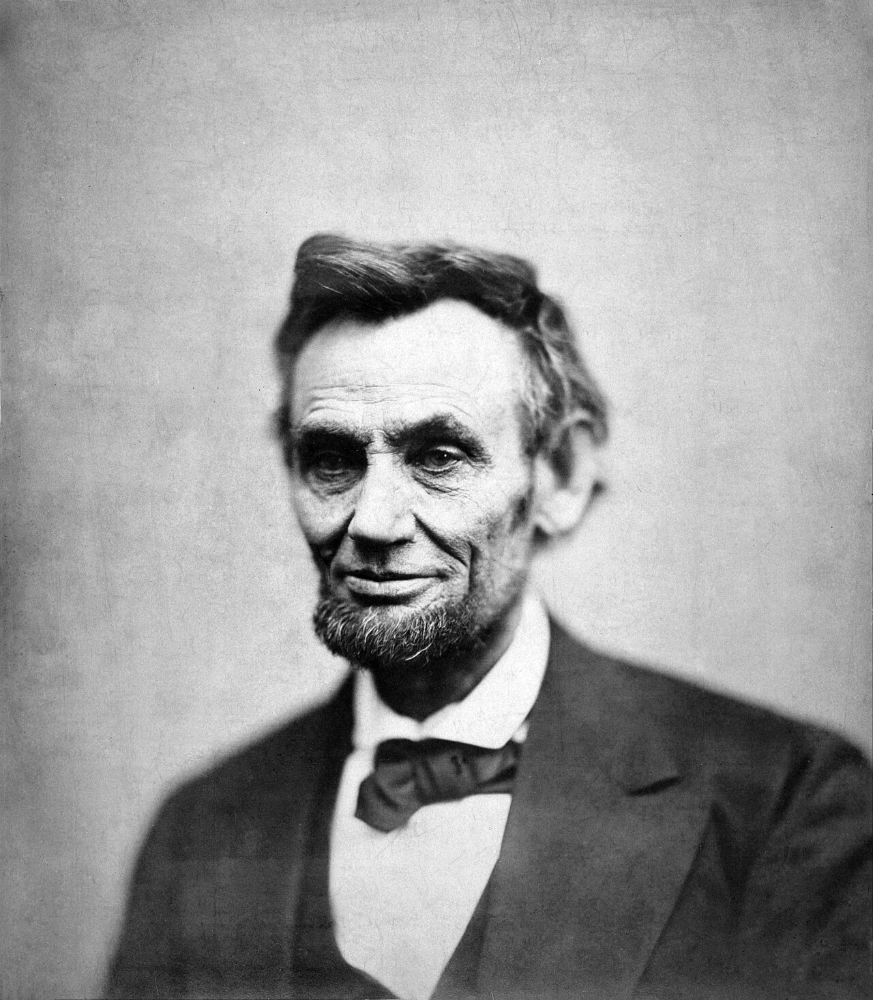

Directions: Fill in the chart as we build the war's ending. Keep this page in your notebook. You will use it again on the review day before the unit test.

| The piece | What it says or does | How it ended the war | What it left unanswered |
|---|---|---|---|
| Grant's campaigns, 1864 and 1865 | |||
| Sherman's march | |||
| The election and Congress | |||
| Appomattox and the address | |||
| April 1865 |
The ending in one sentence. Finish this sentence in your own words, using at least two rows of the chart as evidence. The war ended the way it did, and settled what it settled, because...
| The piece | What it says or does | How it ended the war | What it left unanswered |
|---|---|---|---|
| Grant's campaigns, 1864 and 1865 | Grant made the Confederate armies the objective, moved every Union army at once, and fought through the Wilderness, Spotsylvania, and Cold Harbor to the nine month siege of Petersburg. | Lee was fixed in place and could not shift men to Sherman or maneuver, until the lines broke in April 1865. | The casualty scale itself, by the usual estimates some sixty five thousand Union men in the Overland campaign's first six weeks. |
| Sherman's march | Sherman took Atlanta, wrote that war is cruelty and cannot be refined, and marched to the sea destroying railroads, mills, and stores in a corridor some sixty miles wide. | The society sustaining the Confederate armies felt the war in its households, and its will and resources were consumed. | The cost to women, children, and freed people in the armies' path, who lost food and shelter to both armies. |
| The election and Congress | The Democrats demanded an armistice in 1864 and lost after Atlanta fell. Congress chartered homesteads and colleges, and the women's petition campaign drove the Thirteenth Amendment through the House on January 31, 1865. | The North voted to finish the war, and slavery's end was written into the Constitution as a wartime act. | The amendment's settlement after the war, which this unit does not teach and the next unit opens. |
| Appomattox and the address | Lee surrendered on April 9, 1865, on terms that paroled his men home with their horses for the spring planting. The Second Inaugural of March 4 named slavery the war's cause and the war its woe. | The largest Confederate army laid down its arms without a guerrilla war, on terms Lincoln had directed to be generous. | The work of binding up the nation's wounds, named by Lincoln and left to others. |
| April 1865 | Booth shot Lincoln on April 14, and the president died April 15. Davis was captured in May. Annie Davis had asked in August 1864 whether she was free. | The war's author of its verdict did not live to direct the peace. | The freed people's claims to land, to safety, and to the vote, standing where the war left them. |
The ending in one sentence. Strong answers join the campaigns to the settlement. The war ended the way it did, and settled what it settled, because Grant fixed the Confederate armies while Sherman destroyed the resources behind them, the North voted in 1864 to finish the work, and the surrender at Appomattox and the amendment of January 1865 together made the Union indivisible and slavery destroyed, while leaving the freed people's future unanswered.